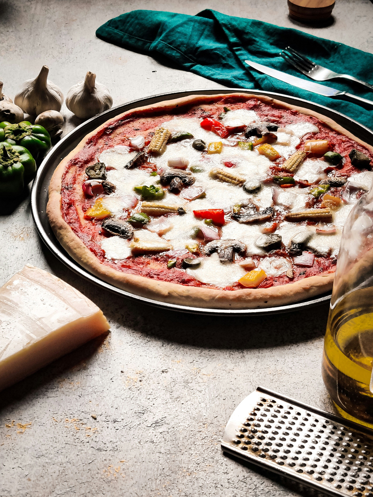

Home

Pan Pizza Recipe
In my family, pizza is like water. Ask the children what they want to eat, believe me when I say they will almost always say pizza. I personally can not eat it because of the cheese. However I understand the rave.
It would be very simple to pop a Digernos into the oven so I am going to complicate things today and give a recipe I just thought of in my head. Enjoy
Ingredients
- Pillsbury Classic Pizza Crust
- Rao's Homemade Pizza Sauce
- Hormel Pepperoni Original
- Mozzarella Cheese, Shredded
- Riccota cheese
Steps
- Preheat the oven on 425 ° F
- Grease the cast iron pan with oil.
- Unroll the dough on to a sheet and press it to how thick you would like it.
- Add the Rao's Homemade Pizza Sauce.
- Then, add cheeses.
- After you add the cheese place the pepperonis on top.
- Transfer the pizza from the sheet to the oiled cast iron.
- Place in the oven and bake for 13 to 17 minutes.
- Once finished, remove from oven and let it cool for a few minutes until fan.
- Use a pizza cutter and start slicing to serve.